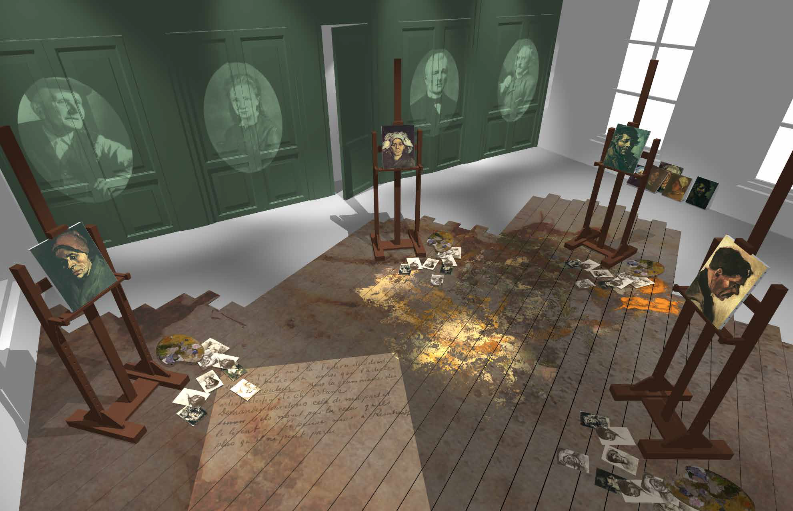

5 Minutes of Garrett talking about his

(stuff)
GPS & Stress Data


Mapping Emotion

Interaction = Major 🔑
I got 99 problems and they all insufficient data visualizations

I got 99 problems and they all insufficient data visualizations

I got 99 problems and they all insufficient data visualizations

The Road to Sufficiency

Interactivity? Major 🔑 & Sufficient!
References & Inspiration
| Scott Mescudi: "I got 99 problems and they all data visualizations." | DJ Khaled: Rambles about things being major 🔑 while eating cereal with champagne. |
 |
 |
| Note: In Mescudi quote, the term "data visualizations" replaced original explicitive phrase inappropriate for current context. |